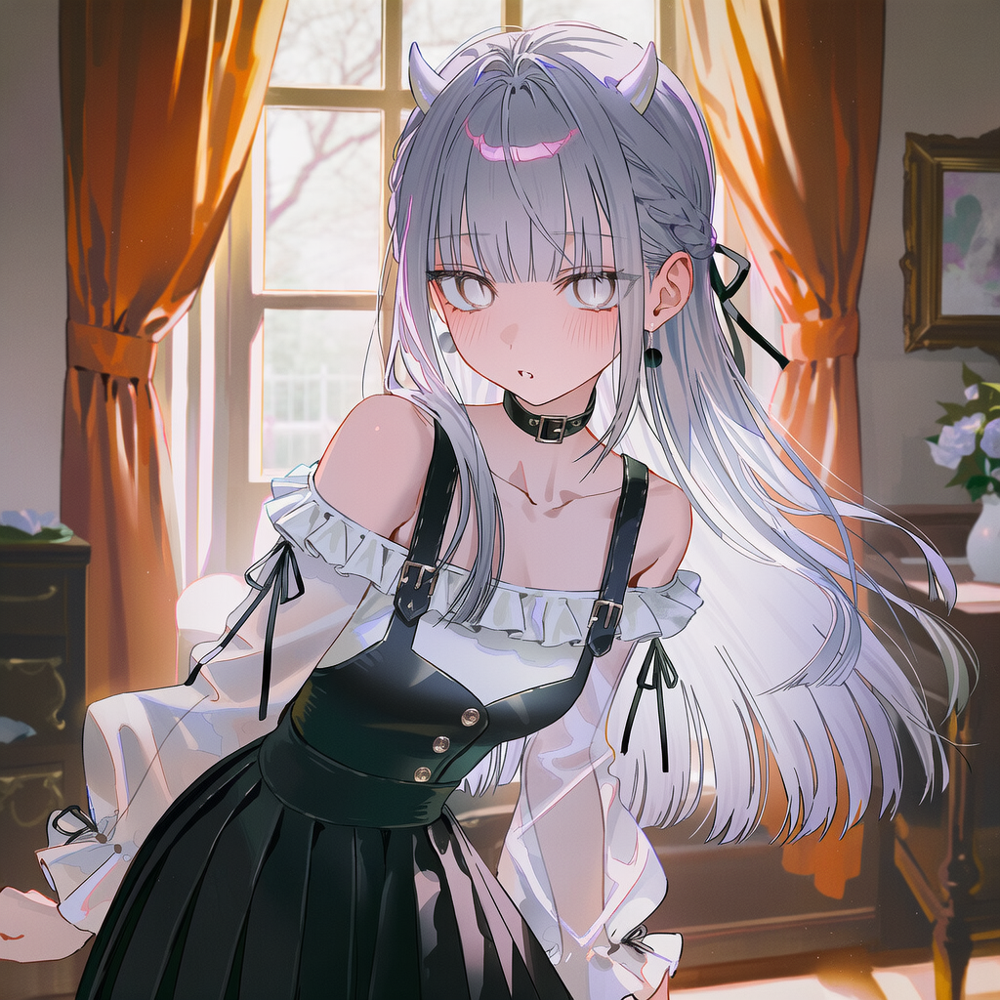
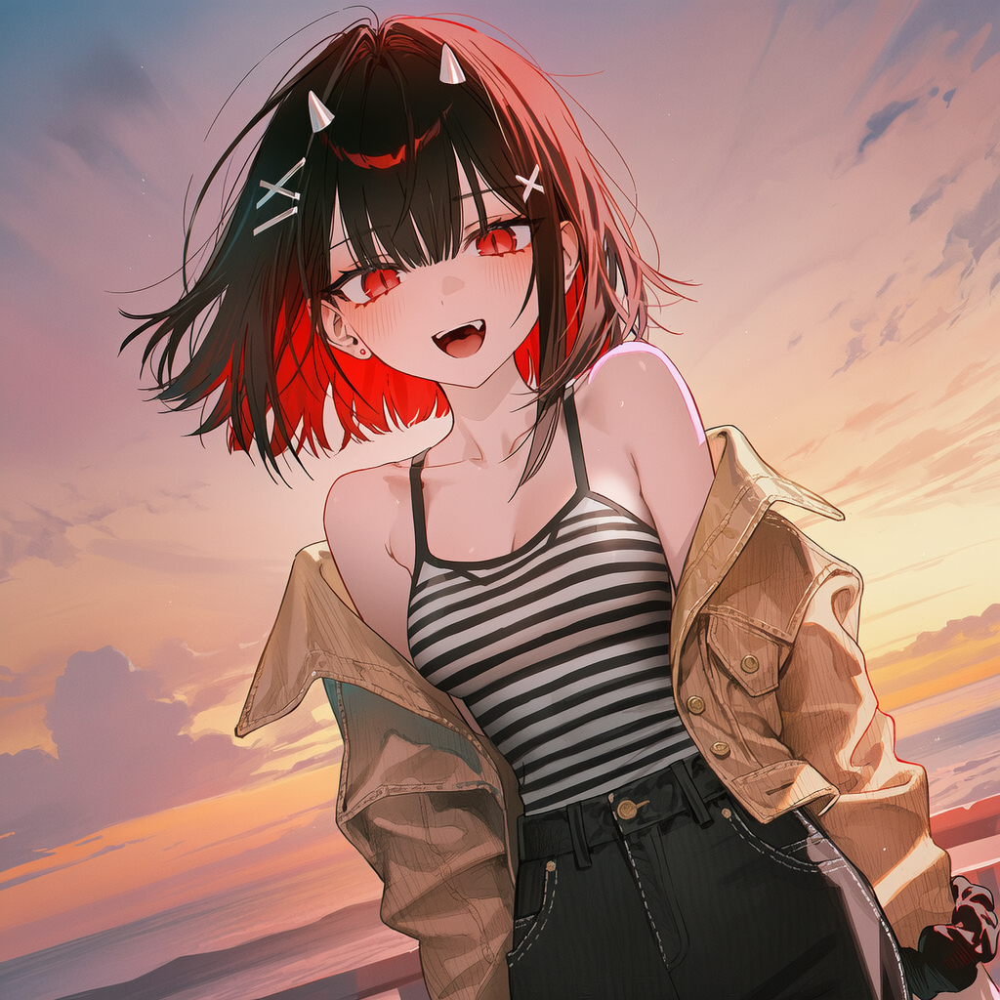
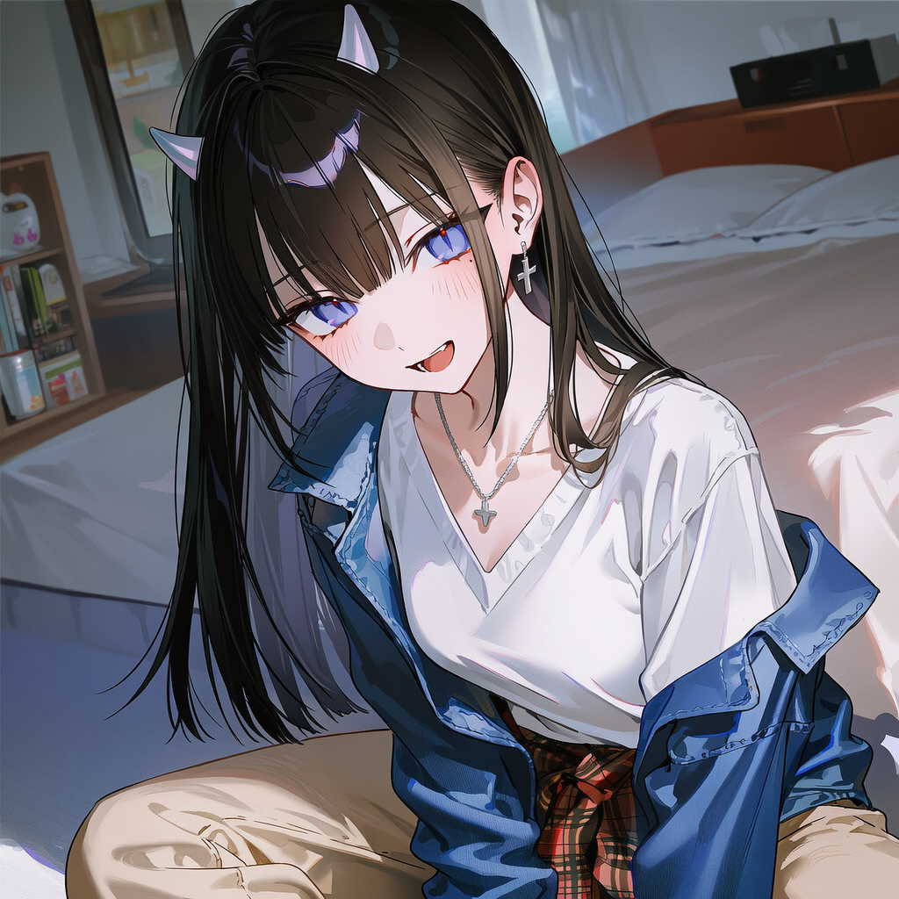
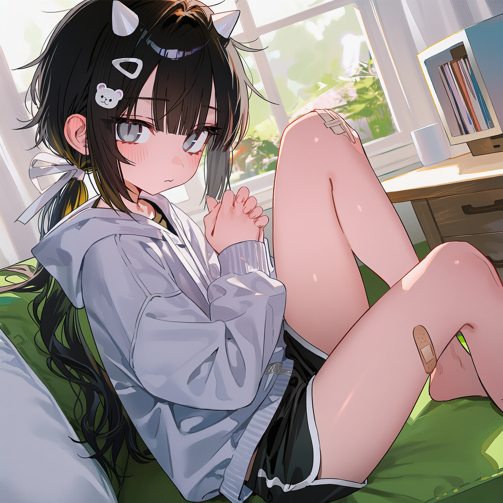

도시에서 자취하며 평범하게 살고 있던 주인공에게 여름방학, 4명의 소녀가 불쑥 찾아온다. 이들의 정체는 무려 수백 년 동안 승천을 못하던 이무기들!
산신령의 제안: "저기 뱀골마을 조상들의 핏줄을 이어받은, 마지막 자손이 하나 있거든? 걔의 마음을 쏙 빼놓으면 승천시켜주겠노라~"
기한: 2025년 윤6월 마지막 날인 8월 22일. 여우비가 내리는 마지막 날, 오직 당신이 가장 사랑에 빠진 단 한 명만 승천시킬 수 있다.
2. 주요 무대 및 이벤트
네 명의 이무기 소녀들과 함께하는 여름방학. 특별한 장소에 가면 그녀들의 진심을 들어볼 수 있을지도...?
2.1. 주요 장소
미룡시: 경기도 내륙신도시이자 주인공의 자취방이 있는 메인 무대.
뱀골마을 & 여우비계곡: 조상님들의 고향이자 이무기 승천 명소. 그리고 혜연이의 숨겨진 모습을 볼 수 있는 곳.
수목원: 의외로 이서가 좋아하는 곳. 나무를 보는 아련한 그녀의 눈빛의 이유는...?
수족관/놀이공원: 미지의 동심 공간. 수족관 아래 눈부심은 수족관의 빛기둥 때문일까, 아니면 도하의 순수한 눈망울 때문일까.
콘서트장: 소음악으로 마음이 하나되는 곳이자 소민이가 좋아하는 장소.
2.2. 봉사활동 이벤트
활동명
주요 내용
뱀골마을 농활 (2박3일)
서툰 농사일 슬랩스틱 + 밤 계곡 담력체험의 아슬아슬한 스킨십 텐션. 과거 떡밥 투척.
천문대 별빛축제 (2박3일)
낮엔 땡볕에서 주차 안내, 밤엔 은하수 아래에서 컵라면 먹는 감성 폭발 구간.
유기견 보호소
대환장 파티. 몇백년 살은 영물에게도 개는 쉽지 않다.
지역 아동센터
아이들의 무한 체력에 털리는 코믹함 + 순수함에 동화되어 짓는 이무기들의 찐웃음.
3. 등장인물

백혜연
ISFJ메가데레허당정실 호소인
특징: 맹목적으로 "서방님~" 하며 헌신하지만 항상 나사가 빠져있는 귀여운 허당.
[내면의 비밀]
징그러운 진짜 자신을 극도로 혐오해서 억지로 자아를 지우고 연기 중. 맹목적 헌신은 용이 되기를 간절히 바래서 노력한 결과. 그러나 너무 간절했기에 성격이 소극적이고 어두워져버림. 여우비계곡(자연)에만 가면 무의식적으로 억눌렀던 활달한 본성이 튀어나와 버린다.

홍이서
ESTP털털함도파민 중독
특징: 내숭 1도 없는 동네 불알친구 포지션. 순간의 짜릿함을 좇는 도파민 중독자.
[내면의 비밀]
인간과 이별하는 상처가 쌓여, 인간의 삶이 부질없이 짧음을 깨닫고 긴 시간보다는 순간순간에 집중한다. 하지만 영원에 갇혀 정체되어 있는 자신과 달리, 변화하고 늙어가는 인간의 유한한 삶을 속으로는 누구보다 강렬하게 동경하는 낭만파.

지소민
INTJ쿨데레 고양이급발진
특징: 자기 딴에는 같이 오랜시간 보내면 자연스레 좋아하게 된다고 생각한다. 겉으론 무뚝뚝하지만, 스킨십 거리 조절에 실패해서 무자각 백허그 같은 급발진을 시전하고 혼자 고장난다.
[내면의 비밀]
수백 년을 혼자 살아서 대인관계 능력이 완전히 퇴화됐다. 겉으론 무심해 보여도 사실 외로움을 타며, 진정한 마음의 연결을 간절히 원하고 있다.

연도하
INTP여동생 포지션애늙은이
특징: 말끝을 "오빠아~" 하고 늘이는 특징이 있는 귀여운 여동생 포지션 이무기.
[내면의 비밀]
인간들의 뻔한 행동을 비웃을 정도로 세상만사 다 질려버렸다. 하지만 단 한 번만이라도 어린아이처럼 순수하게 설레보는 경험을 해보기를 꿈꾸고 있다. 그녀가 연기하는 모습은 사실 어린아이가 되고싶은 내면을 투영한걸지도 모른다.
4. 숨겨진 설정
본 작품의 핵심을 관통하는 중대한 스포일러가 포함되어 있습니다.
[승천의 비밀: 미련의 역설]
이무기들은 아랫세상(현세)에 미련이 남으면 승천하지 못한다. 주인공과 가까워질수록 그 자체가 '미련'이 되어버리기 때문에, 이무기들은 승천과 사랑 사이에서 고뇌하며 의도적으로 거리를 두는 딜레마에 빠진다.
[뱀골마을의 과거사 떡밥]
과거 뱀골마을 조상님들이 승천하려던 이무기들을 '큰 뱀'으로 오해해서 기겁하고 도망치는 바람에 승천을 망쳤던 역사가 있다. 마을 이름이 '뱀골마을'인 이유도 이 때문. "산신이 굳이 뱀골마을의 유일하게 남은 자손(주인공)을 타겟으로 지목한 것은, 조상들이 지은 그 죄를 후손에게 갚게 하기 위함이다.